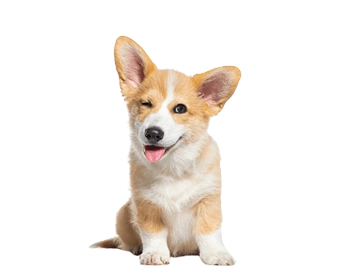

A ACAPRA, atuante desde 2014, surgiu com o propósito de proteção animal em Florianópolis. O trabalho começou pequeno em 2014, mas hoje expandiu para um amplo conjunto de atividades de proteção e resgate de animais.
Nossa missão é promover o bem-estar animal através de resgates, cuidados médicos, campanhas de adoção e conscientização sobre a importância da castração e cuidados básicos. Com um time dedicado de voluntários, a ACAPRA consegue impactar positivamente a vida de centenas de animais todos os anos.
Para doar à ACAPRA (Associação Brusquense de Proteção aos Animais), você pode:
A ACAPRA acolhe cães e gatos resgatados e precisa de doações para cuidar deles.
Os maus-tratos a animais representam uma forma cruel e inaceitável de abuso. Infelizmente, muitos animais são vítimas de negligência, violência e sofrimento, seja por abandono, agressões físicas ou condições inadequadas de vida. Os efeitos desses abusos não se limitam apenas ao sofrimento físico dos animais, mas também podem causar danos psicológicos irreversíveis.
Se você presenciar qualquer forma de maus-tratos a animais, denuncie imediatamente às autoridades competentes. No Brasil, a Lei de Crimes Ambientais (Lei nº 9.605/98) prevê penas para quem maltratar animais.
Em abril de 2024, a ACAPRA buscou voluntários para o pedágio solidário realizado em maio. A ação ocorreu em diversos pontos de Brusque, com o objetivo de arrecadar fundos para os cuidados dos animais resgatados.
A ACAPRA tem promovido regularmente feirinhas de adoção e eventos para arrecadar fundos e conscientizar a população sobre a importância da adoção responsável e do bem-estar animal.
Em setembro de 2024, a ACAPRA realizará uma pastelada beneficente para arrecadar fundos. O evento contará com diversos sabores de pastéis e toda a renda será revertida para os cuidados dos animais resgatados.